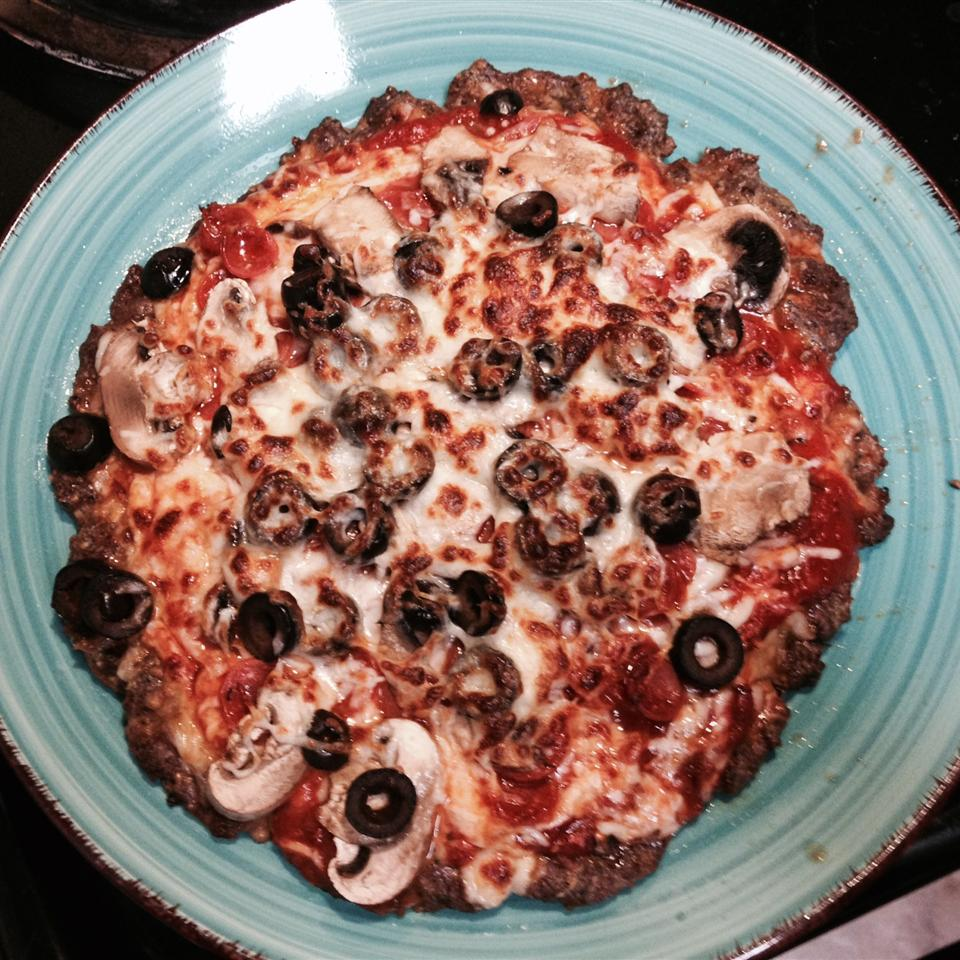

Pepperoni Meatza

Description
This low-carb, gluten-free, paleo "pizza" uses ground beef as the crust to
create a filling and absolutely delicious meal. Feel free to add whatever
toppings you normally eat on pizza. "I loved this!" says recipe reviewer
NessTheMess. "I'm doing a gluten-free low-carb diet and this was perfect!"
Ingredients
- 1 tablespoon salt
- 1 teaspoon caraway seeds (Optional)
- 1 teaspoon dried oregano
- 1 teaspoon garlic salt
- 1 teaspoon ground black pepper
- 1 teaspoon red pepper flakes, or to taste (Optional)
- 2 pounds extra lean ground beef
- 2 eggs
- ½ cup grated Parmesan cheese
- 1 (12 ounce) package shredded mozzarella cheese
- 1 cup tomato sauce
- 1 (3.5 ounce) package sliced pepperoni, or to taste
Steps
- Preheat oven to 450 degrees F (230 degrees C).
-
Mix together salt, caraway seeds, oregano, garlic salt, ground black
pepper, and crushed red pepper flakes in a small bowl.
-
Mix ground beef and eggs in a mixing bowl until thoroughly incorporated.
Add Parmesan cheese and seasoning mixture to beef; combine. Press ground
beef mixture into a 12x17-inch pan, spread out evenly.
-
Bake in the preheated oven until meat is no longer pink, about 10
minutes. Drain grease.
-
Set oven rack about 6 inches from the heat source and turn on the oven's
broiler.
-
Sprinkle 1/3 of the mozzarella cheese over baked meat, followed by
tomato sauce in an even layer. Sprinkle another 1/3 of the mozzarella
cheese over the sauce and top with slices of pepperoni. Sprinkle
remaining mozzarella cheese over pizza.
-
Broil until cheese is melted, bubbling, and lightly browned, 3 to 5
minutes.